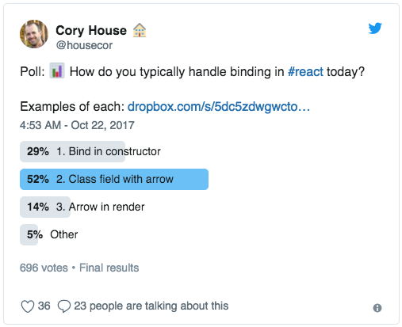

<!doctype html>
<html>
	<head>
		<meta charset="utf-8">
		<meta name="viewport" content="width=device-width, initial-scale=1.0, maximum-scale=1.0, user-scalable=no">

		<title>How to write good react components</title>

		<link rel="stylesheet" href="css/reveal.css">
		<link rel="stylesheet" href="css/theme/solarized.css">

		<!-- Theme used for syntax highlighting of code -->
		<link rel="stylesheet" href="lib/css/zenburn.css">
    <style>
      .reveal p {
        font-size: 1.5rem;
      }
      .reveal pre {
        width: 100%;
        margin: 0;
        box-shadow: none;
      }
      .reveal pre.smallCode {
        font-size: 1.2rem;
      }
      .reveal pre code {
        max-height: 600px;
      }
      .reveal blockquote {
        width: 100%;
      }
      .reveal blockquote p {
        font-size: 2rem;
        text-align: left;
      }
      .session-title {
        text-shadow: 1px 1px 2px black, 0 0 1em blue, 0 0 0.2em blue !important
      }
      .jest-logo {
        position: relative;
        left: 4rem;
        width: 30rem;
        border: none !important;
        box-shadow: none !important;
      }
    </style>

		<!-- Printing and PDF exports -->
		<script>
			var link = document.createElement( 'link' );
			link.rel = 'stylesheet';
			link.type = 'text/css';
			link.href = window.location.search.match( /print-pdf/gi ) ? 'css/print/pdf.css' : 'css/print/paper.css';
			document.getElementsByTagName( 'head' )[0].appendChild( link );
		</script>
	</head>
	<body>
		<div class="reveal">
			<div class="slides">
				<section data-markdown>
					<script type="text/template">
# How to write good react components

chun@tubi.tv
					</script>
				</section>
				<section>
          <section data-markdown>
            <script type="text/template">
## Agenda

- What is Good
- Basic Principles
- Best Practices
            </script>
          </section>
				</section>
				<section>
          <section data-markdown>
            <script type="text/template">
## What is Good

- Easy to use
- Reliable
- Maintainable
            </script>
          </section>
				</section>
				<section>
          <section data-markdown>
            <script type="text/template">
## Basic Principles
            </script>
          </section>
          <section data-markdown>
            <script type="text/template">
### 1. Keep it simple and stupid
<br />

> The principle is best exemplified by the story of Johnson handing a team of design engineers a handful of tools,
> with the challenge that the jet aircraft they were designing must be repairable by an average mechanic in the field under combat conditions with only these tools.
> Hence, the "stupid" refers to the relationship between the way things break and the sophistication available to repair them.
            </script>
          </section>
          <section data-markdown>
            <script type="text/template">
### 2. Do one thing and do it well
<br />

<pre>
  <code class="bash">
$ git ls-files src/components | grep '.js$' | wc -l
  </code>
</pre>
            </script>
          </section>
          <section data-markdown>
            <script type="text/template">
### 3. Worse is better

> Simplicity of both the interface and the implementation are more important than any other attributes of the system—including correctness, consistency, and completeness.

[More](https://en.wikipedia.org/wiki/Worse_is_better)
            </script>
          </section>
				</section>
				<section>
          <section data-markdown>
            <script type="text/template">
## Best Practices
            </script>
          </section>
				</section>
				<section>
          <section data-markdown>
            <script type="text/template">
### Functionality

How to design functionalities of a component
            </script>
          </section>
          <section data-markdown>
            <script type="text/template">
#### One shoot One kill

Full functionalities for one specific thing.

<pre class="smallCode">
  <code class="js">
&lt;Container className="row-example-container">
  &lt;Row>
    &lt;Col md="8">&lt;div>.Col .Col--md-8&lt;/div>&lt;/Col>
    &lt;Col md="4" lg="2">&lt;div>.Col .Col--md-4 .Col--lg-2&lt;/div>&lt;/Col>
  &lt;/Row>
  &lt;Row>
    &lt;Col xs="6" md="4" lg="2">&lt;div>.Col .Col--6 .Col--md-4 .Col--lg-2&lt;/div>&lt;/Col>
    &lt;Col xs="6" md="4" lg="2">&lt;div>.Col .Col--6 .Col--md-4 .Col--lg-2&lt;/div>&lt;/Col>
    &lt;Col xs="6" md="4" lg="2">&lt;div>.Col .Col--6 .Col--md-4 .Col--lg-2&lt;/div>&lt;/Col>
    &lt;Col xs="6" md="4" lg="2">&lt;div>.Col .Col--6 .Col--md-4 .Col--lg-2&lt;/div>&lt;/Col>
    &lt;Col xs="6" md="4" lg="2">&lt;div>.Col .Col--6 .Col--md-4 .Col--lg-2&lt;/div>&lt;/Col>
    &lt;Col xs="6" md="4" lg="2">&lt;div>.Col .Col--6 .Col--md-4 .Col--lg-2&lt;/div>&lt;/Col>
  &lt;/Row>
&lt;/Container>
  </code>
</pre>
            </script>
          </section>
          <section data-markdown>
            <script type="text/template">
#### Avoid All-in-One component

Prefer compact and othogonal components, then combine them to thrive

<pre>
  <code class="js">
// bad
&lt;Button to="/home">Home Page&lt;/Button>

// good
&lt;ATag to="/home">
  &lt;Button>Home Page&lt;/Button>
&lt;/ATag>
  </code>
</pre>
            </script>
          </section>
          <section data-markdown>
            <script type="text/template">
#### Leverage HOC to DRY

If there are several components sharing the same pattern, it's time to consider HOC

<pre>
  <code class="js">
function ppHOC(WrappedComponent) {
  return class PP extends React.Component {
    render() {
      const newProps = {
        user: currentLoggedInUser,
      };
      return &lt;WrappedComponent {...this.props} {...newProps}/>
    }
  }
}
  </code>
</pre>

[Example - ATQProvider](https://github.com/adRise/www/blob/master/src/common/components/ATQProvider/ATQProvider.js)

[React Higher Order Components in depth](https://medium.com/@franleplant/react-higher-order-components-in-depth-cf9032ee6c3e)
            </script>
          </section>
        </section>
				<section>
          <section data-markdown>
            <script type="text/template">
### Interface

How to define the outline of a component
            </script>
          </section>
          <section data-markdown>
            <script type="text/template">
#### Prefer Stateless Functional Component

SFC is short and straightforward, use it amap if performance isn't critical.

There is also a good approach to use HOC to convert SFC to PureComponent:

<pre>
  <code class="js">
const User = pure(({ name, highlighted, userSelected }) => (
  &lt;div>
    &lt;h3
      style={{fontStyle: highlighted ? 'italic' : 'normal'}}
      onClick={event => { userSelected() }}
    >
      {name}
    &lt;/h3>
  &lt;/div>
));
  </code>
</pre>

[Optimizing React Performance with Stateless Components](https://www.sitepoint.com/optimizing-react-performance-stateless-components/)
            </script>
          </section>
          <section data-markdown>
            <script type="text/template">

            </script>
          </section>
          <section data-markdown>
            <script type="text/template">
#### Identify Minimal Representation Of UI State

> Figure out the absolute minimal representation of the state your application needs and compute everything else you need on-demand.
> For example, if you’re building a TODO list, just keep an array of the TODO items around; don’t keep a separate state variable for the count.

[One edge case](https://github.com/adRise/www/pull/1871/files#diff-d6addd8ee9ed2f4ad0b6ef0dd55c0d19R779)
            </script>
          </section>
          <section data-markdown>
            <script type="text/template">
#### Don't forget Context

Context isn't good for most of the time, but it's super good for some scenarios.

<pre>
  <code class="html">
&lt;Dropdown isOpen={this.state.dropdownOpen} toggle={this.toggle}>
  &lt;DropdownToggle caret>
    Dropdown
  &lt;/DropdownToggle>
  &lt;DropdownMenu>
    &lt;DropdownItem>Action&lt;/DropdownItem>
    &lt;DropdownItem>Action&lt;/DropdownItem>
  &lt;/DropdownMenu>
&lt;/Dropdown>
  </code>
</pre>

[Another use case: Parent-Child Coupling](https://reactjs.org/docs/context.html#parent-child-coupling)
            </script>
          </section>
        </section>
				<section>
          <section data-markdown>
            <script type="text/template">
### Implementation

How to make it real
            </script>
          </section>
          <section data-markdown>
            <script type="text/template">
#### Investigate and figure out a better approach

Investigate the main-stream solutions, but keep one thing in mind: Is there a better way?

<pre class="smallCode">
  <code class="html">
&lt;Carousel className="carousel-demo">
  &lt;Col xs="4" lg="3" xxl="2">&lt;div className="tile">1&lt;/div>&lt;/Col>
  &lt;Col xs="4" lg="3" xxl="2">&lt;div className="tile">2&lt;/div>&lt;/Col>
  &lt;Col xs="4" lg="3" xxl="2">&lt;div className="tile">3&lt;/div>&lt;/Col>
  &lt;Col xs="4" lg="3" xxl="2">&lt;div className="tile">4&lt;/div>&lt;/Col>
  &lt;Col xs="4" lg="3" xxl="2">&lt;div className="tile">5&lt;/div>&lt;/Col>
  &lt;Col xs="4" lg="3" xxl="2">&lt;div className="tile">6&lt;/div>&lt;/Col>
  &lt;Col xs="4" lg="3" xxl="2">&lt;div className="tile">7&lt;/div>&lt;/Col>
  &lt;Col xs="4" lg="3" xxl="2">&lt;div className="tile">8&lt;/div>&lt;/Col>
&lt;/Carousel>
  </code>
</pre>
            </script>
          </section>
          <section data-markdown>
            <script type="text/template">
#### Don't cache result from props

Props tend to change, don't cache result computed from them

[Example](https://github.com/adRise/www/pull/1700)
            </script>
          </section>
          <section data-markdown>
            <script type="text/template">
#### Don't overuse arrow function

Arrow function as class property has cost maybe you don't aware.



[Example](https://babeljs.io/repl/#?babili=false&browsers=&build=&builtIns=false&code_lz=MYGwhgzhAEAKCmAnCB7AdtA3gKGtCYAntALzQAUqAtvAC4AWAlmgOYCUpAfFrntMOlQh4AOhAoW5AOQFCALikAafChoNm7ANy8Avtry8WieHUqq6TVhxx9-glMLETpRk7QXLqFjW33Qd2DpAA&debug=false&forceAllTransforms=false&shippedProposals=false&circleciRepo=&evaluate=false&fileSize=false&lineWrap=true&presets=es2015%2Creact%2Cstage-2&prettier=false&targets=&version=6.26.0&envVersion=)

[Arrow Functions in Class Properties Might Not Be As Great As We Think](https://medium.com/@charpeni/arrow-functions-in-class-properties-might-not-be-as-great-as-we-think-3b3551c440b1)
            </script>
          </section>
          <section data-markdown>
            <script type="text/template">
#### Worse is better

Simplicity of the implementation is more important than small performance improvement.

[Example](https://github.com/adRise/web_ui/pull/40/files#diff-8075a6ffd666c2ba31de076f8ea5845cL43)
            </script>
          </section>
          <section data-markdown>
            <script type="text/template">
#### Write tests like talking stories

Semantic tests can not only check the critical use paths, they are also able to be used as manuals.
            </script>
          </section>
        </section>
        <section data-markdown>
          <script type="text/template">
## References

- [Thinking in React](https://reactjs.org/docs/thinking-in-react.html)
- [Clean Code vs. Dirty Code: React Best Practices](http://americanexpress.io/clean-code-dirty-code/)
- [Make Your React Components Pretty](https://medium.com/walmartlabs/make-your-react-components-pretty-a1ae4ec0f56e)
- [Unix philosophy](https://en.wikipedia.org/wiki/Unix_philosophy)
          </script>
        </section>
        <section data-markdown>
          <script type="text/template">
## Thanks
          </script>
        </section>
			</div>
		</div>

		<script src="lib/js/head.min.js"></script>
		<script src="js/reveal.js"></script>

		<script>
			// More info about config & dependencies:
			// - https://github.com/hakimel/reveal.js#configuration
			// - https://github.com/hakimel/reveal.js#dependencies
			Reveal.initialize({
        controls: false,
        progress: true,
				dependencies: [
					{ src: 'plugin/markdown/marked.js' },
					{ src: 'plugin/markdown/markdown.js' },
					{ src: 'plugin/notes/notes.js', async: true },
					{ src: 'plugin/highlight/highlight.js', async: true, callback: function() { hljs.initHighlightingOnLoad(); } }
				]
			});
		</script>
	</body>
</html>
